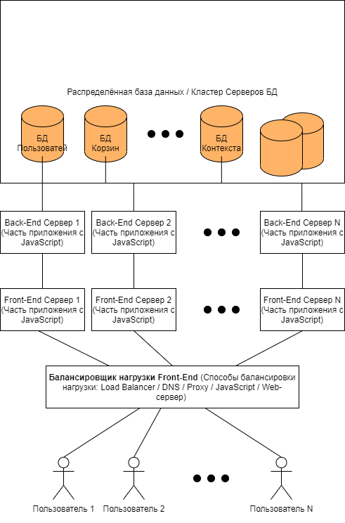

Статья содержит общие сведения о концепции распределения нагрузки и распределённых информационных систем и программ.
Приложения бывают (по формированию нагрузки): монолитные и распределённые. Монолитное приложение представляет собой цельное приложение в своём экземпляре. Распределённые приложения делаются из потребности приложения в производительности, они бывают многопоточными и распределёнными по серверам, чаще всего встречается, и то, и то. Данные в распределённых приложения для работы фрагментируются на независимые части (порции, блоки). Группу компьютеров для распределённых систем назвают Кластером. Кластеры бывают, так и для приложений, так и для данных. Обычно различают следующие основные виды кластеров:
Современные кластеры работают в режиме 24/7, т.е. безперебойно. Сейчас популярны распределённые системы на основе микросервисов (microservices), где части приложений имеют свои выделенные сервера для функционирования. База данных в них может быть тоже распределена, что рекомендуемо для высокой нагрузки.
В данном разделе рассматривается общая концепция распределения нагрузки с раздельными её сторонами.
Все спрособы представленые в разделе являются не полным списком приёмов, но самыми простыми. Вы можете их самостоятельно реализовать в Вашей программе, либо придумать свои способы распределения системы. Приёмы расмотренные ниже являются только общей концепцией, в своей же работе Вам рекомендуется использовать уже готовые решения и системы. Но также их можно зачастую реализовать самостоятельно, но это делает программистов зависимыми от Вашей реализации, а не готовой подсистемы с документацией.
Дадим пример 1 схемы распределённой информационной системы:
Рис 2.1. Схема распределённой системы #1.
В этой схеме точкой входа для пользователя является Балансировщий нагрузки. Он предназначен для балансирования сетевой и вычислительной нагрузки к однотипным серверам Front-end. Он может быть реализован по разному, ввиде HTTP-Proxy, балансировать может сам веб-сервер, либо DNS-сервер (интернет или интранет), или код JavaScript по разным Back-End серверам. Back-End сервера представляют собой просто дублирование серверного кода по разным серверам для доступа к распределённой Базе данных. Распределённая База данных (Кластерная БД) — это множество серверов баз данных содержащие независимые данные, или данные, для которых не требуется сетевое взаимодействие, возможно также и с сетевым взаимодействием, но это очень очень долго, т.к. множество микросервисов позволяют разделить данные на независимые базы данных. Лучше всего строить распределённый БД на не зависимых данных, без общей шины, т.к. любой LEFT JOIN (или любая зависимость/связь данных) реализованный на общей шине по сети займёт титанически много времени.
Дадим пример 2 схемы распределённой информационной системы:

Рис 2.2. Схема распределённой системы #2.
В данном способе (#2) уделяется внимание тому, что и серверная часть нуждается в балансировании нагрузки. Для клиентсткой части (Front-End), это может сделать, либо веб-сервер, либо DNS, либо прокси-сервера. Но нагрузку на серверную часть удобно сделать с помощью JavaScript. Т.е. желательно, чтобы у Вас был отдельный модуль балансировки на JavaScript. Но это также может сделать веб-сервера серверной части, но удобнее снять нагрузку с сервера на JavaScript.
Дадим пример 3 схемы распределённой информационной системы:

Рис 2.1. Схеме распределённой системы #3.
В этом способе (#3) уделяется внимание двум аспектам:
Back-End (серверная часть) может представлять собой не дублирование приложение, что удобно, а раздельные его куски, выполняемые на конкретном сервере.
Распределённая база данных может быть разделена по:
По функциям она, к примеру, может быть разделена на чтение/запись.
Разделение по объектам часто бывает разное. К примеру, по страницам каталога (таблицы, грида), по темам каталога, по фильтрам каталога, по пользователям, по индексам, по алфавиту.
Для трениковки в личных целях (для образования) нет возможности получить доступ к высоконагруженной подсистеме. Так что Вам крайне пригодится фантазия при их комерческой разработке, главное распределить элементы программы по серверам согласно их техническим характеристикам.